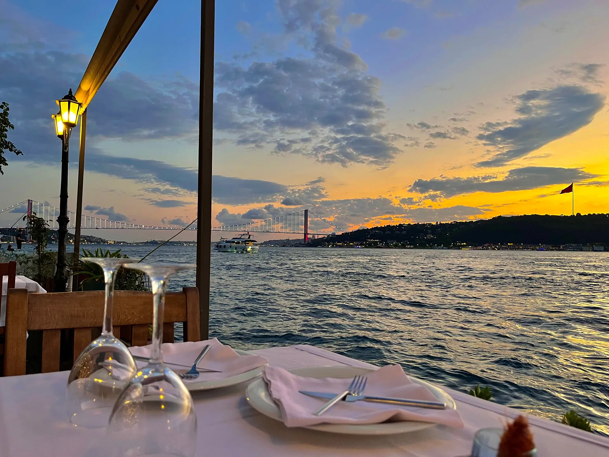

NOVARAX, şehrin ortasında bir otelin zemin katında, denize sıfır bir restoran. Sabah balıkçılardan ne aldıysak akşam sofranızda: mevsiminde, sade ve özenle.
120 kişilik terasımız Boğaz’a ve köprünün ışıklarına bakar. İçeride açık mutfak, odun fırını ve 300 etiketlik bir şarap mahzeni sizi bekler. Her akşam güneş batarken ışıkları kısar, masalara mum yakarız.
Masa ayırt
Balıklarımız her sabah Rumelifeneri ve Sarıyer teknelerinden gelir. Taze değilse menüde yoktur.
Zeytinyağı Ayvalık’tan, otlar Urla’dan, ekmek her sabah kendi odun fırınımızdan.
Güneş suya değdiğinde terasta müzik susar, ilk kadehi ev ikramı olarak biz koyarız.

Şef Deniz Aral
“İyi bir balığı süslemezsin; ona yalnızca yer açarsın.”
Ayvalık’ta balıkçı bir ailede büyüdü. Londra ve Barselona mutfaklarında geçen on iki yılın ardından İstanbul’a, denizin kenarına döndü. Mutfağında tek kural var: mevsim ne diyorsa o.
Galeri
Terastan, mutfaktan ve Boğaz’dan kareler.